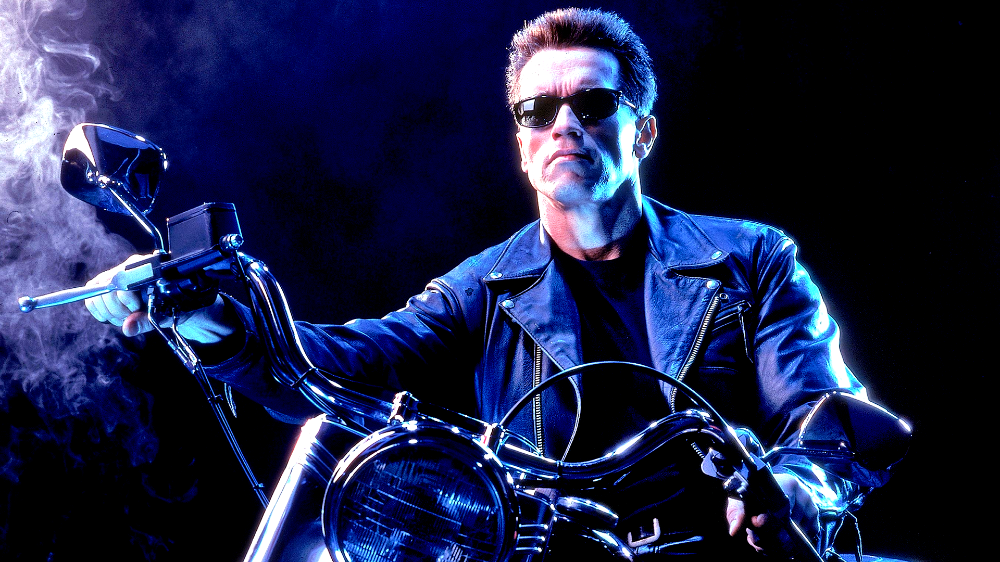

Terminator 2: Judgment Day
July 3, 1991
2 Hr 17 Min
Sci-Fi / Action
8.6 / 10
Over ten years have passed since the first machine called The Terminator tried to kill Sarah Connor and her unborn son, John. The man who will become the future leader of the human resistance against the Machines is now a healthy young boy. However, another Terminator, called the T-1000, is sent back through time by the supercomputer Skynet. This new Terminator is more advanced and more powerful than its predecessor and its mission is to kill John Connor when he's still a child. However, Sarah and John do not have to face the threat of the T-1000 alone. Another Terminator (identical to the same model that tried and failed to kill Sarah Connor in 1984) is also sent back through time to protect them. Now, the battle for tomorrow has begun.
Cast